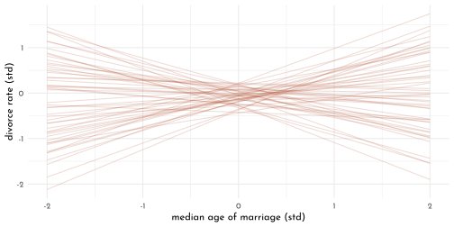
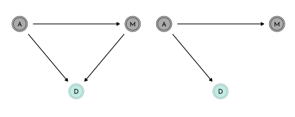
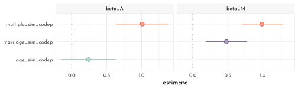
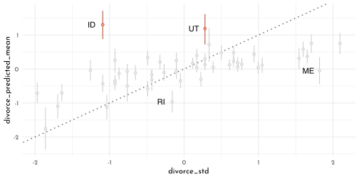
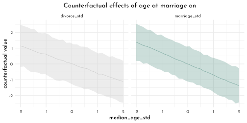
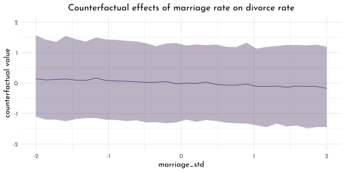
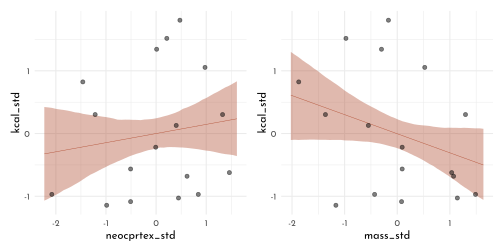

6 Rethinking: Chapter 5
Spurious waffles
by Richard McElreath, building on the Summaries by Solomon Kurz and Jake Thompson.
library(sf)
library(rethinking)
library(ggfx)
data(WaffleDivorce)
WaffleDivorce <- WaffleDivorce %>% as_tibble()
usa <- read_sf("~/work/geo_store/USA/usa_states_albers_revised.gpkg") %>%
left_join(WaffleDivorce, by = c(name = "Location" ))
p_waffle <- usa %>%
ggplot(aes(fill = WaffleHouses / Population)) +
scale_fill_gradientn(colours = c(clr0d, clr2) %>%
clr_lighten(.3))
p_divorce <- usa %>%
ggplot(aes(fill = Divorce))+
scale_fill_gradientn(colours = c(clr0d, clr1) %>%
clr_lighten(.3))
p_age <- usa %>%
ggplot(aes(fill = MedianAgeMarriage))+
scale_fill_gradientn(colours = c(clr_lighten(clr0d, .3), clr3))p_waffle +
p_divorce +
p_age +
plot_layout(guides = "collect") &
with_shadow(geom_sf(aes(color = after_scale(clr_darken(fill)))),
x_offset = 0, y_offset = 0, sigma = 3) &
guides(fill = guide_colorbar(title.position = "top",
barheight = unit(5,"pt"))) &
theme(legend.position = "bottom")
Age Model: first model (divorce rate depends on age at marriage)
\[ \begin{array}{cccr} D_i & {\sim} & Normal(\mu, \sigma) & \textrm{[likelihood]}\\ \mu_i & = & \alpha + \beta_{A} A_{i} & \textrm{[linear model]}\\ \alpha & \sim & Normal(0, 0.2) & \textrm{[$\alpha$ prior]}\\ \beta_{A} & \sim & Normal(0, 0.5) & \textrm{[$\beta$ prior]}\\ \sigma & \sim & Exponential(1) & \textrm{[$\sigma$ prior]} \end{array} \]
data_waffle <- WaffleDivorce %>%
mutate(across(.cols = c(Divorce, Marriage, MedianAgeMarriage),
.fns = standardize,
.names = "{str_to_lower(.col)}_std"),
waffle_pop = WaffleHouses / Population) %>%
rename(median_age_std = "medianagemarriage_std")
sd(data_waffle$MedianAgeMarriage)#> [1] 1.24363model_age <- quap(
flist = alist(
divorce_std ~ dnorm( mu, sigma ) ,
mu <- alpha + beta_A * median_age_std ,
alpha ~ dnorm( 0, 0.2 ),
beta_A ~ dnorm( 0, 0.5 ),
sigma ~ dexp( 1 )
),
data = data_waffle
)
set.seed(10)
age_priors <- extract.prior(model_age) %>%
as_tibble()
prior_prediction_range <- c(-2, 2)
age_prior_predictions <- link(model_age,
post = age_priors,
data = list(median_age_std = prior_prediction_range)) %>%
as_tibble() %>%
set_names(nm = as.character(prior_prediction_range)) %>%
mutate(.draw = row_number())
age_prior_predictions %>%
filter(.draw < 51) %>%
ggplot() +
geom_segment(aes(x = -2, xend = 2, y = `-2`, yend = `2`, group = .draw),
color = clr2, alpha = .2) +
labs(x = "median age of marriage (std)",
y = "divorce rate (std)")
age_seq <- seq(min(data_waffle$median_age_std),
max(data_waffle$median_age_std),
length.out = 101)
model_age_posterior_prediction_samples <- link(model_age, data = data.frame(median_age_std = age_seq)) %>%
as_tibble() %>%
set_names(nm = age_seq) %>%
pivot_longer(cols = everything(), names_to = "median_age_std", values_to = "divorce_std") %>%
mutate(median_age_std = as.numeric(median_age_std),
MedianAgeMarriage = median_age_std * sd(data_waffle$MedianAgeMarriage) +
mean(data_waffle$MedianAgeMarriage),
Divorce = divorce_std * sd(data_waffle$Divorce) +
mean(data_waffle$Divorce))
model_age_posterior_prediction_pi <- model_age_posterior_prediction_samples %>%
group_by(median_age_std, MedianAgeMarriage) %>%
summarise(mean = mean(Divorce),
PI_lower = PI(Divorce)[1],
PI_upper = PI(Divorce)[2]) %>%
ungroup()
model_age_posterior_prediction_simulation <- sim(model_age,
data = data.frame(median_age_std = age_seq),
n = 5e3) %>%
as_tibble() %>%
set_names(nm = age_seq) %>%
pivot_longer(cols = everything(), names_to = "median_age_std", values_to = "divorce_std") %>%
mutate(median_age_std = as.numeric(median_age_std),
MedianAgeMarriage = median_age_std * sd(data_waffle$MedianAgeMarriage) +
mean(data_waffle$MedianAgeMarriage),
Divorce = divorce_std * sd(data_waffle$Divorce) +
mean(data_waffle$Divorce))
model_age_posterior_prediction_simulation_pi <- model_age_posterior_prediction_simulation %>%
group_by(median_age_std, MedianAgeMarriage) %>%
summarise(mean = mean(Divorce),
PI_lower = PI(Divorce)[1],
PI_upper = PI(Divorce)[2]) %>%
ungroup()
p_age <- ggplot(mapping = aes(x = MedianAgeMarriage)) +
geom_ribbon(data = model_age_posterior_prediction_simulation_pi,
aes(ymin = PI_lower, ymax = PI_upper), fill = clr0d, alpha = .35) +
geom_smooth(data = model_age_posterior_prediction_pi, stat = "identity",
aes(y = mean, ymin = PI_lower, ymax = PI_upper),
color = clr3, fill = fll3, size = .4) +
geom_point(data = data_waffle, aes(y = Divorce), color = rgb(0,0,0,.5), size = .6) +
labs(y = " divorce")Marriage Model: alternative model (divorce rate depends on marriage rate)
\[ \begin{array}{cccr} D_i & {\sim} & Normal(\mu, \sigma) & \textrm{[likelihood]}\\ \mu_i & = & \alpha + \beta_{M} M_{i} & \textrm{[linear model]}\\ \alpha & \sim & Normal(0, 0.2) & \textrm{[$\alpha$ prior]}\\ \beta_{M} & \sim & Normal(0, 0.5) & \textrm{[$\beta$ prior]}\\ \sigma & \sim & Exponential(1) & \textrm{[$\sigma$ prior]} \end{array} \]
model_marriage <- quap(
flist = alist(
divorce_std ~ dnorm( mu, sigma ) ,
mu <- alpha + beta_M * marriage_std ,
alpha ~ dnorm( 0, 0.2 ),
beta_M ~ dnorm( 0, 0.5 ),
sigma ~ dexp( 1 )
),
data = data_waffle
)marriage_seq <- seq(min(data_waffle$marriage_std),
max(data_waffle$marriage_std),
length.out = 101)
model_marriage_posterior_prediction_samples <- link(model_marriage,
data = data.frame(marriage_std = marriage_seq)) %>%
as_tibble() %>%
set_names(nm = marriage_seq) %>%
pivot_longer(cols = everything(), names_to = "marriage_std", values_to = "divorce_std") %>%
mutate(marriage_std = as.numeric(marriage_std),
Marriage = marriage_std * sd(data_waffle$Marriage) +
mean(data_waffle$Marriage),
Divorce = divorce_std * sd(data_waffle$Divorce) +
mean(data_waffle$Divorce))
model_marriage_posterior_prediction_pi <- model_marriage_posterior_prediction_samples %>%
group_by(marriage_std, Marriage) %>%
summarise(mean = mean(Divorce),
PI_lower = PI(Divorce)[1],
PI_upper = PI(Divorce)[2]) %>%
ungroup()
model_marriage_posterior_prediction_simulation <- sim(model_marriage,
data = data.frame(marriage_std = marriage_seq),
n = 5e3) %>%
as_tibble() %>%
set_names(nm = marriage_seq) %>%
pivot_longer(cols = everything(), names_to = "marriage_std", values_to = "divorce_std") %>%
mutate(marriage_std = as.numeric(marriage_std),
Marriage = marriage_std * sd(data_waffle$Marriage) +
mean(data_waffle$Marriage),
Divorce = divorce_std * sd(data_waffle$Divorce) +
mean(data_waffle$Divorce))
model_marriage_posterior_prediction_simulation_pi <- model_marriage_posterior_prediction_simulation %>%
group_by(marriage_std, Marriage) %>%
summarise(mean = mean(Divorce),
PI_lower = PI(Divorce)[1],
PI_upper = PI(Divorce)[2]) %>%
ungroup()
p_marriage <- ggplot(mapping = aes(x = Marriage)) +
geom_ribbon(data = model_marriage_posterior_prediction_simulation_pi,
aes(ymin = PI_lower, ymax = PI_upper), fill = clr0d, alpha = .35) +
geom_smooth(data = model_marriage_posterior_prediction_pi, stat = "identity",
aes(y = mean, ymin = PI_lower, ymax = PI_upper),
color = clr1, fill = fll1, size = .2) +
geom_point(data = data_waffle, aes(y = Divorce), color = rgb(0,0,0,.5), size = .6) +
labs(y = " divorce")Waffle Model:
model_waffle <- quap(
flist = alist(
divorce_std ~ dnorm( mu, sigma ) ,
mu <- alpha + beta_W * waffle_pop ,
alpha ~ dnorm( 0, 0.2 ),
beta_W ~ dnorm( 0, 0.5 ),
sigma ~ dexp( 1 )
),
data = data_waffle
)
waffle_seq <- seq(min(data_waffle$waffle_pop),
max(data_waffle$waffle_pop),
length.out = 101)
model_waffle_posterior_prediction_samples <- link(model_waffle,
data = data.frame(waffle_pop = waffle_seq)) %>%
as_tibble() %>%
set_names(nm = waffle_seq) %>%
pivot_longer(cols = everything(), names_to = "waffle_pop", values_to = "divorce_std") %>%
mutate(waffle_pop = as.numeric(waffle_pop),
Divorce = divorce_std * sd(data_waffle$Divorce) +
mean(data_waffle$Divorce))
model_waffle_posterior_prediction_pi <- model_waffle_posterior_prediction_samples %>%
group_by(waffle_pop) %>%
summarise(mean = mean(Divorce),
PI_lower = PI(Divorce)[1],
PI_upper = PI(Divorce)[2]) %>%
ungroup()
p_waffle <- ggplot(mapping = aes(x = waffle_pop)) +
geom_smooth(data = model_waffle_posterior_prediction_pi, stat = "identity",
aes(y = mean, ymin = PI_lower, ymax = PI_upper),
color = clr2, fill = fll2, size = .2) +
geom_point(data = data_waffle, aes(y = Divorce), color = rgb(0,0,0,.5), size = .6) +
labs(y = " divorce")p_waffle +
p_marriage + theme(axis.title.y = element_blank(), axis.text.y = element_blank()) +
p_age + theme(axis.title.y = element_blank(), axis.text.y = element_blank()) &
lims(y = c(4, 15))
6.1 Directed Acyclic Graphs
dag1 <- dagify(
D ~ A + M,
M ~ A,
exposure = "A",
outcome = "M") %>%
tidy_dagitty(.dagitty = .,layout = tibble(x = c(0,1,.5), y = c(1,1, .4))) %>%
mutate(stage = if_else(name == "D", "response",
if_else(name %in% c("A", "M"),
"predictor", "confounds")))
dag2 <- dagify(
D ~ A,
M ~ A,
exposure = "A",
outcome = "M") %>%
tidy_dagitty(.dagitty = .,layout = tibble(x = c(0,.5,1), y = c(1, .4, 1))) %>%
mutate(stage = if_else(name == "D", "response",
if_else(name %in% c("A", "M"),
"predictor", "confounds")))
plot_dag(dag1, clr_in = clr3) +
plot_dag(dag2, clr_in = clr3) &
scale_y_continuous(limits = c(.35, 1.05)) &
coord_equal()
DAG notation:
- \(Y \perp \!\!\! \perp X | Z\): “\(Y\) is independent of \(X\) conditional on \(Z\)”
- \(D \not\!\perp\!\!\!\perp A\): "\(D\) is associated with \(A\)"
Check pair wise correlations with cor():
data_waffle %>%
dplyr::select(divorce_std,marriage_std, median_age_std) %>%
cor() %>%
as.data.frame(row.names = row.names(.)) %>%
round(digits = 2) %>%
knitr::kable()| divorce_std | marriage_std | median_age_std | |
|---|---|---|---|
| divorce_std | 1.00 | 0.37 | -0.60 |
| marriage_std | 0.37 | 1.00 | -0.72 |
| median_age_std | -0.60 | -0.72 | 1.00 |
library(dagitty)
dagitty('dag{ D <- A -> M -> D}') %>%
impliedConditionalIndependencies()
dagitty('dag{ D <- A -> M }') %>%
impliedConditionalIndependencies()#> D _||_ M | A6.2 Multiple Regression notion
\[ \begin{array}{cccr} D_i & {\sim} & Normal(\mu, \sigma) & \textrm{[likelihood]}\\ \mu_i & = & \alpha + \beta_{M} M_{i} + \beta_{A} A_{i} & \textrm{[linear model]}\\ \alpha & \sim & Normal(0, 0.2) & \textrm{[$\alpha$ prior]}\\ \beta_{M} & \sim & Normal(0, 0.5) & \textrm{[$\beta_M$ prior]}\\ \beta_{A} & \sim & Normal(0, 0.5) & \textrm{[$\beta_A$ prior]}\\ \sigma & \sim & Exponential(1) & \textrm{[$\sigma$ prior]} \end{array} \]
or compact notion
\[ \mu_i = \alpha + \sum_{j = 1}^{n} \beta_jx_{ji} \]
or even matrix notion
\[ m = Xb \]
model_multiple <- quap(
flist = alist(
divorce_std ~ dnorm( mu, sigma ) ,
mu <- alpha + beta_M * marriage_std + beta_A * median_age_std,
alpha ~ dnorm( 0, 0.2 ),
beta_A ~ dnorm( 0, 0.5 ),
beta_M ~ dnorm( 0, 0.5 ),
sigma ~ dexp( 1 )
),
data = data_waffle
)
precis(model_multiple) %>%
round(digits = 2) %>%
as.matrix() %>%
knitr::kable()| mean | sd | 5.5% | 94.5% | |
|---|---|---|---|---|
| alpha | 0.00 | 0.10 | -0.16 | 0.16 |
| beta_A | -0.61 | 0.15 | -0.85 | -0.37 |
| beta_M | -0.07 | 0.15 | -0.31 | 0.18 |
| sigma | 0.79 | 0.08 | 0.66 | 0.91 |
ct <- coeftab(model_age, model_marriage, model_multiple,se = TRUE)
plot_coeftab(ct)
beta_A doesn’t really change, it only grows more uncertain, yet beta_M is only associated with divorce, when marriage rate is missing from the model.
“Once we know the median age at marriage for a State, there is little to no additional predictive power in also knowing the rate of marriage at that State.”
\(\rightarrow\) \(D \perp \!\!\! \perp M | A\)
simulating the divorcee example
n <- 50
data_divorce_sim <- tibble(median_age_std = rnorm(n),
marriage_std = rnorm(n, mean = -median_age_std),
divorce_std = rnorm(n, mean = median_age_std),
divorce_codep = rnorm(n, mean = median_age_std + marriage_std))
p1 <- ggpairs(data_divorce_sim %>% dplyr::select(-divorce_codep),
lower = list(continuous = wrap(ggally_points, colour = clr1, size = .9, alpha = .7)),
diag = list(continuous = wrap("densityDiag", fill = fll1, color = clr1, adjust = 1)),
upper = list(continuous = wrap(ggally_cor, size = 5, color = "black", family = "Josefin sans")))
p2 <- ggpairs(data_divorce_sim %>% dplyr::select(-divorce_std),
lower = list(continuous = wrap(ggally_points, colour = clr2, size = .9, alpha = .7)),
diag = list(continuous = wrap("densityDiag", fill = fll2, color = clr2, adjust = 1)),
upper = list(continuous = wrap(ggally_cor, size = 5, color = "black", family = "Josefin sans")))
cowplot::plot_grid(ggmatrix_gtable(p1), ggmatrix_gtable(p2))
simulating the right DAG (\(D \perp \!\!\! \perp M | A\))
model_multiple_sim <- quap(
flist = alist(
divorce_std ~ dnorm( mu, sigma ) ,
mu <- alpha + beta_M * marriage_std + beta_A * median_age_std,
alpha ~ dnorm( 0, 0.2 ),
beta_A ~ dnorm( 0, 0.5 ),
beta_M ~ dnorm( 0, 0.5 ),
sigma ~ dexp( 1 )
),
data = data_divorce_sim
)
model_age_sim <- quap(
flist = alist(
divorce_std ~ dnorm( mu, sigma ) ,
mu <- alpha + beta_A * median_age_std,
alpha ~ dnorm( 0, 0.2 ),
beta_A ~ dnorm( 0, 0.5 ),
sigma ~ dexp( 1 )
),
data = data_divorce_sim
)
model_marriage_sim <- quap(
flist = alist(
divorce_std ~ dnorm( mu, sigma ) ,
mu <- alpha + beta_M * marriage_std,
alpha ~ dnorm( 0, 0.2 ),
beta_M ~ dnorm( 0, 0.5 ),
sigma ~ dexp( 1 )
),
data = data_divorce_sim
)ct_sim <- coeftab(model_age_sim, model_marriage_sim, model_multiple_sim, se = TRUE)
plot_coeftab(ct_sim)
simulating the left DAG (\(D \not\!\perp\!\!\!\perp M | A\))
model_multiple_sim_codep <- quap(
flist = alist(
divorce_codep ~ dnorm( mu, sigma ) ,
mu <- alpha + beta_M * marriage_std + beta_A * median_age_std,
alpha ~ dnorm( 0, 0.2 ),
beta_A ~ dnorm( 0, 0.5 ),
beta_M ~ dnorm( 0, 0.5 ),
sigma ~ dexp( 1 )
),
data = data_divorce_sim
)
model_age_sim_codep <- quap(
flist = alist(
divorce_codep ~ dnorm( mu, sigma ) ,
mu <- alpha + beta_A * median_age_std,
alpha ~ dnorm( 0, 0.2 ),
beta_A ~ dnorm( 0, 0.5 ),
sigma ~ dexp( 1 )
),
data = data_divorce_sim
)
model_marriage_sim_codep <- quap(
flist = alist(
divorce_codep ~ dnorm( mu, sigma ) ,
mu <- alpha + beta_M * marriage_std,
alpha ~ dnorm( 0, 0.2 ),
beta_M ~ dnorm( 0, 0.5 ),
sigma ~ dexp( 1 )
),
data = data_divorce_sim
)ct_sim_codep <- coeftab(model_age_sim_codep, model_marriage_sim_codep, model_multiple_sim_codep,
se = TRUE)
plot_coeftab(ct_sim_codep)
6.2.1 Visualizations for multivariate regressions
- Predictor residual plots. useful for understanding the model, but not much else
- Posterior prediction plots. checking fit and assessing predictions
- Counterfactual plots. implied predictions for imaginary experiments
6.2.1.1 Predictor residual plots
predictor residual plot for marriage rate
pred_res_marriage <- quap(
flist = alist(
marriage_std ~ dnorm( mu, sigma ) ,
mu <- alpha + beta_AM * median_age_std,
alpha ~ dnorm( 0, 0.2 ),
beta_AM ~ dnorm( 0, 0.5 ),
sigma ~ dexp( 1 )
),
data = data_waffle
)
residuals_marriage <- link(pred_res_marriage) %>%
as_tibble() %>%
set_names(nm = seq_along(data_waffle$median_age_std)) %>%
pivot_longer(cols = everything(),
names_to = "row_idx",
values_to = "fit_marriage") %>%
group_by(row_idx) %>%
summarise(mean_marriage = mean(fit_marriage),
lower_pi = PI(fit_marriage)[1],
upper_pi = PI(fit_marriage)[2]) %>%
ungroup() %>%
mutate(row_idx = as.numeric(row_idx)) %>%
left_join(data_waffle %>% mutate(row_idx = row_number()),. ) %>%
mutate(residual_marriage = marriage_std - mean_marriage)
p_11 <- residuals_marriage %>%
ggplot(aes(x = median_age_std)) +
geom_segment(aes(xend = median_age_std, y = mean_marriage, yend = marriage_std),
color = rgb(0,0,0,.6), linetype = 3) +
geom_line(aes(y = mean_marriage), color = clr1) +
geom_point(aes(y = marriage_std),
color = clr1, fill = clr_lighten(clr1, .35), shape = 21) +
geom_text(data = residuals_marriage %>% filter(Loc %in% c("DC", "HI", "ND", "ME", "WY")),
aes(x = median_age_std - .1, y = marriage_std, label = Loc), hjust = 1)
pred_res_marriage_mu <- quap(
flist = alist(
divorce_std ~ dnorm( mu, sigma ) ,
mu <- alpha + beta * residual_marriage,
alpha ~ dnorm( 0, 0.2 ),
beta ~ dnorm( 0, 0.5 ),
sigma ~ dexp( 1 )
),
data = residuals_marriage
)
seq_res <- seq(min(residuals_marriage$residual_marriage), max(residuals_marriage$residual_marriage), length.out = 101)
residual_lm_posterior <- link(pred_res_marriage_mu, data = data.frame(residual_marriage = seq_res)) %>%
as_tibble() %>%
set_names(nm = seq_res) %>%
pivot_longer(cols = everything(), names_to = "residual_marriage", values_to = "divorce_std") %>%
mutate(residual_marriage = as.numeric(residual_marriage)) %>%
group_by(residual_marriage) %>%
summarise(mean = mean(divorce_std),
PI_lower = PI(divorce_std)[1],
PI_upper = PI(divorce_std)[2]) %>%
ungroup()
p_12 <- ggplot(mapping = aes(x = residual_marriage)) +
geom_vline(xintercept = 0, lty = 3, color = rgb(0,0,0,.6)) +
geom_smooth(data = residual_lm_posterior, aes(y = mean, ymin = PI_lower, ymax = PI_upper),
stat = "identity", color = clr1, fill = fll1, size = .4) +
geom_point(data = residuals_marriage, aes(y = divorce_std),
color = clr1, fill = clr_lighten(clr1,.35), shape = 21) +
geom_text(data = residuals_marriage %>% filter(Loc %in% c("DC", "HI", "ND", "ME", "WY")),
aes(y = divorce_std - .4, label = Loc)) +
labs(y = "divorce_rate (std)")predictor residual plot for age at marriage
pred_res_age <- quap(
flist = alist(
median_age_std ~ dnorm( mu, sigma ) ,
mu <- alpha + beta_MA * marriage_std,
alpha ~ dnorm( 0, 0.2 ),
beta_MA ~ dnorm( 0, 0.5 ),
sigma ~ dexp( 1 )
),
data = data_waffle
)
residuals_age <- link(pred_res_age) %>%
as_tibble() %>%
set_names(nm = seq_along(data_waffle$marriage_std)) %>%
pivot_longer(cols = everything(),
names_to = "row_idx",
values_to = "fit_age") %>%
group_by(row_idx) %>%
summarise(mean_age = mean(fit_age),
lower_pi = PI(fit_age)[1],
upper_pi = PI(fit_age)[2]) %>%
ungroup() %>%
mutate(row_idx = as.numeric(row_idx)) %>%
left_join(data_waffle %>% mutate(row_idx = row_number()),. ) %>%
mutate(residual_age = median_age_std - mean_age)
p_21 <- residuals_age %>%
ggplot(aes(x = marriage_std)) +
geom_segment(aes(xend = marriage_std, y = mean_age, yend = median_age_std),
color = rgb(0,0,0,.6), linetype = 3) +
geom_line(aes(y = mean_age), color = clr2) +
geom_point(aes(y = median_age_std),
color = clr2, fill = clr_lighten(clr2, .35), shape = 21) +
geom_text(data = residuals_marriage %>% filter(Loc %in% c("DC", "HI", "ID")),
aes(x = marriage_std - .1, y = median_age_std, label = Loc), hjust = 1)
pred_res_age_mu <- quap(
flist = alist(
divorce_std ~ dnorm( mu, sigma ) ,
mu <- alpha + beta * residual_age,
alpha ~ dnorm( 0, 0.2 ),
beta ~ dnorm( 0, 0.5 ),
sigma ~ dexp( 1 )
),
data = residuals_age
)
seq_res_age <- seq(min(residuals_age$residual_age), max(residuals_age$residual_age), length.out = 101)
residual_lm_posterior_age <- link(pred_res_age_mu, data = data.frame(residual_age = seq_res_age)) %>%
as_tibble() %>%
set_names(nm = seq_res_age) %>%
pivot_longer(cols = everything(), names_to = "residual_age", values_to = "divorce_std") %>%
mutate(residual_age = as.numeric(residual_age)) %>%
group_by(residual_age) %>%
summarise(mean = mean(divorce_std),
PI_lower = PI(divorce_std)[1],
PI_upper = PI(divorce_std)[2]) %>%
ungroup()
p_22 <- ggplot(mapping = aes(x = residual_age)) +
geom_vline(xintercept = 0, lty = 3, color = rgb(0,0,0,.6)) +
geom_smooth(data = residual_lm_posterior_age, aes(y = mean, ymin = PI_lower, ymax = PI_upper),
stat = "identity", color = clr2, fill = fll2, size = .4) +
geom_point(data = residuals_age, aes(y = divorce_std),
color = clr2, fill = clr_lighten(clr2,.35), shape = 21) +
geom_text(data = residuals_age %>% filter(Loc %in% c("DC", "HI", "ID")),
aes(y = divorce_std - .4, label = Loc)) +
labs(y = "divorce_rate (std)")p_11 + p_21 +
p_12 + p_22
6.2.1.2 Posterior Preediction Plots
posterior_prediction <- link(model_multiple) %>%
as_tibble() %>%
set_names(nm = seq_along(data_waffle$divorce_std)) %>%
pivot_longer(cols = everything(),
names_to = "row_idx",
values_to = "divorce_predicted") %>%
group_by(row_idx) %>%
summarise(divorce_predicted_mean = mean(divorce_predicted),
lower_pi = PI(divorce_predicted)[1],
upper_pi = PI(divorce_predicted)[2]) %>%
ungroup() %>%
mutate(row_idx = as.numeric(row_idx)) %>%
left_join(data_waffle %>% mutate(row_idx = row_number()), . )
posterior_simmulation <- sim(model_multiple) %>%
as_tibble() %>%
set_names(nm = seq_along(data_waffle$divorce_std)) %>%
pivot_longer(cols = everything(),
names_to = "row_idx",
values_to = "divorce_predicted") %>%
group_by(row_idx) %>%
summarise(lower_pi = PI(divorce_predicted)[1],
upper_pi = PI(divorce_predicted)[2]) %>%
ungroup() %>%
mutate(row_idx = as.numeric(row_idx)) %>%
left_join(data_waffle %>% mutate(row_idx = row_number()), . )
ggplot(mapping = aes(x = divorce_std)) +
geom_abline(slope = 1, size = .7, lty = 3, color = rgb(0,0,0,.6)) +
geom_linerange(data = posterior_prediction,
aes(ymin = lower_pi, ymax = upper_pi), color = clr2)+
geom_point(data = posterior_prediction, aes(y = divorce_predicted_mean),
color = clr2, fill = clr_lighten(clr2,.6), shape = 21, size = 1.5)+
geom_text(data = posterior_prediction %>% filter(Loc %in% c("ID", "ME", "RI", "UT")),
aes(x = divorce_std - .15, y = divorce_predicted_mean, label = Loc)) 
Regressions tend to under-estimate variable in the high end of the range and over-estimate in the low end of the range. This is normal, they “pull towards the mean”.
The labeled States however (ID, ME, RI, UT), are not well predicted by the Model (eg. due to additional social factors).
Simulating spurious association
N <- 100
data_spurious <- tibble(x_real = rnorm(N),
x_spur = rnorm(N, x_real),
y = rnorm(N, x_real))
ggpairs(data_spurious,
lower = list(continuous = wrap(ggally_points, colour = clr3, size = .9, alpha = .7)),
diag = list(continuous = wrap("densityDiag", fill = fll3, color = clr3, adjust = 1)),
upper = list(continuous = wrap(ggally_cor, size = 5, color = "black", family = "Josefin sans")))
model_spurious <- quap(
flist = alist(
y ~ dnorm(mu, sigma),
mu <- alpha + beta_r * x_real + beta_s * x_spur,
alpha ~ dnorm(0, .2),
beta_r ~ dnorm(0, .5),
beta_s ~ dnorm(0, .5),
sigma ~ dexp(1)
),
data = data_spurious
)
precis(model_spurious) %>%
as.matrix() %>%
round(digits = 2) %>%
knitr::kable()| mean | sd | 5.5% | 94.5% | |
|---|---|---|---|---|
| alpha | 0.09 | 0.09 | -0.06 | 0.24 |
| beta_r | 0.87 | 0.14 | 0.64 | 1.10 |
| beta_s | 0.09 | 0.11 | -0.09 | 0.27 |
| sigma | 1.06 | 0.07 | 0.94 | 1.17 |
Note, how the estimated mean for beta_s is close to 0 (0.09) – despite the correlation shown above 🤔`.
6.2.1.3 Counterfactual Plots
model_counterfactual <- quap(
flist = alist(
# A -> D <- M
divorce_std ~ dnorm( mu, sigma ) ,
mu <- alpha + beta_M * marriage_std + beta_A * median_age_std,
alpha ~ dnorm( 0, 0.2 ),
beta_A ~ dnorm( 0, 0.5 ),
beta_M ~ dnorm( 0, 0.5 ),
sigma ~ dexp( 1 ),
# A -> M
marriage_std ~ dnorm( mu_M, sigma_M ),
mu_M <- alpha_M + beta_AM * median_age_std,
alpha_M ~ dnorm( 0, 0.2 ),
beta_AM ~ dnorm( 0, 0.5 ),
sigma_M ~ dexp(1)
),
data = data_waffle
)
precis(model_counterfactual) %>%
as.matrix() %>%
round(digits = 2) %>%
knitr::kable()| mean | sd | 5.5% | 94.5% | |
|---|---|---|---|---|
| alpha | 0.00 | 0.10 | -0.16 | 0.16 |
| beta_A | -0.61 | 0.15 | -0.85 | -0.37 |
| beta_M | -0.07 | 0.15 | -0.31 | 0.18 |
| sigma | 0.79 | 0.08 | 0.66 | 0.91 |
| alpha_M | 0.00 | 0.09 | -0.14 | 0.14 |
| beta_AM | -0.69 | 0.10 | -0.85 | -0.54 |
| sigma_M | 0.68 | 0.07 | 0.57 | 0.79 |
Note, that marriage_std and median_age_std are strongly negatively correlated (-0.69)
A_seq <- seq(-2, 2, length.out = 30)
unpack_sim <- function(x, seq = A_seq){
nms <- names(x)
purrr::map(.x = nms, .f = function(y, x, seq_in = seq){
x[[y]] %>%
as_tibble() %>%
set_names(nm = seq_along(seq_in)) %>%
pivot_longer(cols = everything(),
names_to = "row_idx",
values_to = "value") %>%
mutate(parameter = y)
}, x = x) %>%
purrr::reduce(bind_rows)
}
data_sim <- sim(fit = model_counterfactual,
data = tibble(median_age_std = A_seq),
vars = c("marriage_std", "divorce_std")) %>%
unpack_sim()
data_sim_pi <- data_sim %>%
group_by(row_idx, parameter) %>%
summarise(mean = mean(value),
PI_lower = PI(value)[1],
PI_upper = PI(value)[2]) %>%
ungroup() %>%
mutate(row_idx = as.numeric(row_idx),
median_age_std = A_seq[row_idx]) %>%
arrange(parameter, median_age_std)
data_sim_pi %>%
ggplot() +
geom_smooth(aes(x = median_age_std, y = mean, ymin = PI_lower, ymax = PI_upper,
color = parameter, fill = after_scale(clr_alpha(color))),
stat = "identity", size = .4) +
scale_color_manual(values = c(clr0d, clr3), guide = "none") +
labs(y = "counterfactual value", title = "Counterfactual effects of age at marriage on") +
facet_wrap(parameter ~ .)
Numerical operations (eg. simulating the causal effect of raising the median age of marriage from 20 to 30):
A_seq2 <- (c(20, 30) - mean(data_waffle$MedianAgeMarriage)) / sd(data_waffle$MedianAgeMarriage)
data_sim_num <- sim(fit = model_counterfactual,
data = tibble(median_age_std = A_seq2),
vars = c("marriage_std", "divorce_std")) %>%
unpack_sim(seq = A_seq2)
data_sim_num %>%
filter(parameter == "divorce_std") %>%
dplyr::select(-parameter) %>%
mutate(pair = (row_number() + 1) %/% 2) %>%
pivot_wider(names_from = row_idx, values_from = value) %>%
mutate(effect = `2` - `1`) %>%
summarise(mean = mean(effect))#> # A tibble: 1 x 1
#> mean
#> <dbl>
#> 1 -4.59…A change of four and a half standard deviations is quite extreme!
M_seq <- A_seq
data_sim_M <- sim(fit = model_counterfactual,
data = tibble(marriage_std = M_seq,
median_age_std = 0),
vars = c("divorce_std")) %>%
as_tibble() %>%
set_names(nm = seq_along(M_seq)) %>%
pivot_longer(cols = everything(),
names_to = "row_idx",
values_to = "divorce_std")
data_sim_M_pi <- data_sim_M %>%
group_by(row_idx) %>%
summarise(mean = mean(divorce_std),
PI_lower = PI(divorce_std)[1],
PI_upper = PI(divorce_std)[2]) %>%
ungroup() %>%
mutate(row_idx = as.numeric(row_idx),
marriage_std = M_seq[row_idx])
data_sim_M_pi %>%
ggplot() +
geom_smooth(aes(x = marriage_std, y = mean, ymin = PI_lower, ymax = PI_upper),
color = clr1, fill = fll1,
stat = "identity", size = .4) +
scale_color_manual(values = c(clr0d, clr3), guide = "none") +
labs(y = "counterfactual value",
title = "Counterfactual effects of marriage rate on divorce rate") +
lims(y = c(-2, 2))
6.3 Masked relationship
Loading the milk data
data(milk)
data_milk <- milk %>%
filter(complete.cases(.)) %>%
as_tibble() %>%
mutate(`mass.log` = log(mass),
across(.cols = c(`kcal.per.g`, `neocortex.perc`, `mass.log`),
.fns = standardize,
.names = "{str_remove_all(.col, '\\\\..*')}_std"))
data_milk %>%
precis() %>%
as.matrix() %>%
as.data.frame() %>%
filter(!is.na(mean)) %>%
mutate(across(.cols = mean:`94.5%`, function(x){round(as.numeric(x), digits = 2)})) %>%
knitr::kable()| mean | sd | 5.5% | 94.5% | histogram | |
|---|---|---|---|---|---|
| kcal.per.g | 0.66 | 0.17 | 0.47 | 0.93 | ▇▂▁▁▁▂▁▁▁▁▁ |
| perc.fat | 36.06 | 14.71 | 15.08 | 54.45 | ▂▁▁▂▃▃▂▅▃▁▇▂ |
| perc.protein | 16.26 | 5.60 | 9.28 | 23.79 | ▂▅▅▅▅▂▂▅▇▂ |
| perc.lactose | 47.68 | 13.59 | 30.35 | 68.31 | ▂▇▅▅▂▇▅▁▅▂ |
| mass | 16.64 | 23.58 | 0.30 | 57.89 | ▇▁▁▁▁▁▁▁ |
| neocortex.perc | 67.58 | 5.97 | 58.41 | 75.59 | ▂▁▂▅▁▅▅▅▇▅▂▂ |
| mass.log | 1.50 | 1.93 | -1.26 | 4.05 | ▂▁▂▂▂▂▅▂▇▁▂▂▅▅ |
| kcal_std | 0.00 | 1.00 | -1.09 | 1.55 | ▃▇▁▃▁▂▂ |
| neocortex_std | 0.00 | 1.00 | -1.54 | 1.34 | ▁▁▂▃▁▇▃▂ |
| mass_std | 0.00 | 1.00 | -1.43 | 1.32 | ▁▂▂▃▃▁▇ |
6.3.1 Bi-variate models
Neocortex effect on caloric content of milk \[ \begin{array}{cccr} K_i & {\sim} & Normal(\mu_i, \sigma) & \textrm{[likelihood]}\\ \mu_i & = & \alpha + \beta_{N} N_{i} & \textrm{[linear model]}\\ \alpha & \sim & Normal(0, 0.2) & \textrm{[$\alpha$ prior]}\\ \beta_{N} & \sim & Normal(0, 0.5) & \textrm{[$\beta_N$ prior]}\\ \sigma & \sim & Exponential(1) & \textrm{[$\sigma$ prior]} \end{array} \]
Mothers weight effect on caloric content of milk \[ \begin{array}{cccr} K_i & {\sim} & Normal(\mu_i, \sigma) & \textrm{[likelihood]}\\ \mu_i & = & \alpha + \beta_{M} M_{i} & \textrm{[linear model]}\\ \alpha & \sim & Normal(0, 0.2) & \textrm{[$\alpha$ prior]}\\ \beta_{M} & \sim & Normal(0, 0.5) & \textrm{[$\beta_M$ prior]}\\ \sigma & \sim & Exponential(1) & \textrm{[$\sigma$ prior]} \end{array} \]
Model implementation (neocortex, draft)
model_milk_draft <- quap(
flist = alist(
kcal_std ~ dnorm(mu, sigma),
mu <- alpha + beta_N * neocortex_std,
alpha ~ dnorm(0, 1),
beta_N ~ dnorm(0, 1),
sigma ~ dexp(1)
),
data = data_milk
)
prior_milk_draft <- extract.prior(model_milk_draft) %>%
as_tibble()
seq_prior <- c(-2, 2)
prior_prediction_milk_draft <- link(model_milk_draft,
post = prior_milk_draft,
data = tibble(neocortex_std = seq_prior)) %>%
as_tibble() %>%
set_names(nm = seq_prior)
p_draft <- prior_prediction_milk_draft %>%
filter(row_number() <= 50) %>%
ggplot() +
geom_segment(aes(x = -2, xend = 2, y = `-2`, yend = `2`), alpha = .6, color = clr0d)Model implementation (neocortex)
model_milk_cortex <- quap(
flist = alist(
kcal_std ~ dnorm(mu, sigma),
mu <- alpha + beta_N * neocortex_std,
alpha ~ dnorm(0, .2),
beta_N ~ dnorm(0, .5),
sigma ~ dexp(1)
),
data = data_milk
)
precis(model_milk_cortex) %>%
as.matrix() %>%
round(digits = 2) %>%
knitr::kable()| mean | sd | 5.5% | 94.5% | |
|---|---|---|---|---|
| alpha | 0.00 | 0.15 | -0.24 | 0.24 |
| beta_N | 0.13 | 0.21 | -0.21 | 0.47 |
| sigma | 0.93 | 0.15 | 0.69 | 1.18 |
prior_milk_cortex <- extract.prior(model_milk_cortex) %>%
as_tibble()
prior_prediction_milk_cortex <- link(model_milk_cortex,
post = prior_milk_cortex,
data = tibble(neocortex_std = seq_prior)) %>%
as_tibble() %>%
set_names(nm = seq_prior)
p_cortex <- prior_prediction_milk_cortex %>%
filter(row_number() <= 50) %>%
ggplot() +
geom_segment(aes(x = -2, xend = 2, y = `-2`, yend = `2`),
alpha = .6, color = clr0d)p_draft + p_cortex &
coord_cartesian(xlim = c(-2, 2),
ylim = c(-2, 2)) &
labs(x = "neocortex_std", y = "kcal_std")
seq_cortex <- seq(min(data_milk$neocortex_std) - .15, max(data_milk$neocortex_std) + .15, length.out = 51)
model_milk_cortex_posterior_prediction_samples <- link(model_milk_cortex,
data = data.frame(neocortex_std = seq_cortex)) %>%
as_tibble() %>%
set_names(nm = seq_cortex) %>%
pivot_longer(cols = everything(),
names_to = "neocortex_std",
values_to = "kcal_std") %>%
mutate(neocortex_std = as.numeric(neocortex_std))
model_milk_cortex_posterior_prediction_pi <- model_milk_cortex_posterior_prediction_samples %>%
group_by(neocortex_std) %>%
summarise(mean = mean(kcal_std),
PI_lower = PI(kcal_std)[1],
PI_upper = PI(kcal_std)[2]) %>%
ungroup()
p_cortex <- ggplot(mapping = aes(x = neocortex_std)) +
geom_smooth(data = model_milk_cortex_posterior_prediction_pi, stat = "identity",
aes(y = mean, ymin = PI_lower, ymax = PI_upper),
color = clr2, fill = fll2, size = .2) +
geom_point(data = data_milk, aes(y = kcal_std), color = rgb(0,0,0,.5), size = 1.6) +
labs(x = "neocprtex_std", y = "kcal_std")Model implementation (mothers weight)
model_milk_weight <- quap(
flist = alist(
kcal_std ~ dnorm(mu, sigma),
mu <- alpha + beta_M * mass_std,
alpha ~ dnorm(0, .2),
beta_M ~ dnorm(0, .5),
sigma ~ dexp(1)
),
data = data_milk
)
precis(model_milk_weight) %>%
as.matrix() %>%
round(digits = 2) %>%
knitr::kable()| mean | sd | 5.5% | 94.5% | |
|---|---|---|---|---|
| alpha | 0.00 | 0.15 | -0.23 | 0.23 |
| beta_M | -0.30 | 0.20 | -0.62 | 0.03 |
| sigma | 0.89 | 0.15 | 0.65 | 1.12 |
seq_weight <- seq(min(data_milk$mass_std) - .15, max(data_milk$mass_std) + .15, length.out = 51)
model_milk_weight_posterior_prediction_samples <- link(model_milk_weight,
data = data.frame(mass_std = seq_weight)) %>%
as_tibble() %>%
set_names(nm = seq_weight) %>%
pivot_longer(cols = everything(),
names_to = "mass_std",
values_to = "kcal_std") %>%
mutate(mass_std = as.numeric(mass_std))
model_milk_weight_posterior_prediction_pi <- model_milk_weight_posterior_prediction_samples %>%
group_by(mass_std) %>%
summarise(mean = mean(kcal_std),
PI_lower = PI(kcal_std)[1],
PI_upper = PI(kcal_std)[2]) %>%
ungroup()
p_weight <- ggplot(mapping = aes(x = mass_std)) +
geom_smooth(data = model_milk_weight_posterior_prediction_pi, stat = "identity",
aes(y = mean, ymin = PI_lower, ymax = PI_upper),
color = clr2, fill = fll2, size = .2) +
geom_point(data = data_milk, aes(y = kcal_std), color = rgb(0,0,0,.5), size = 1.6) +
labs(x = "mass_std", y = "kcal_std")p_cortex + p_weight
Model implementation (necocortex and mothers weight)
\[ \begin{array}{cccr} K_i & {\sim} & Normal(\mu_i, \sigma) & \textrm{[likelihood]}\\ \mu_i & = & \alpha + \beta_{N} N_{i} + \beta_{M} M_{i} & \textrm{[linear model]}\\ \alpha & \sim & Normal(0, 0.2) & \textrm{[$\alpha$ prior]}\\ \beta_{N} & \sim & Normal(0, 0.5) & \textrm{[$\beta_N$ prior]}\\ \beta_{M} & \sim & Normal(0, 0.5) & \textrm{[$\beta_M$ prior]}\\ \sigma & \sim & Exponential(1) & \textrm{[$\sigma$ prior]} \end{array} \]
model_milk_multi <- quap(
flist = alist(
kcal_std ~ dnorm(mu, sigma),
mu <- alpha + beta_N * neocortex_std + beta_M * mass_std,
alpha ~ dnorm(0, .2),
beta_N ~ dnorm(0, .5),
beta_M ~ dnorm(0, .5),
sigma ~ dexp(1)
),
data = data_milk
)
precis(model_milk_multi) %>%
as.matrix() %>%
round(digits = 2) %>%
knitr::kable()| mean | sd | 5.5% | 94.5% | |
|---|---|---|---|---|
| alpha | 0.00 | 0.13 | -0.20 | 0.20 |
| beta_N | 0.64 | 0.23 | 0.27 | 1.01 |
| beta_M | -0.75 | 0.23 | -1.12 | -0.37 |
| sigma | 0.69 | 0.12 | 0.49 | 0.88 |
ct_milk <- coeftab(model_milk_cortex, model_milk_weight, model_milk_multi,
se = TRUE)
plot_coeftab(ct_milk)
data_milk %>%
dplyr::select(kcal_std, neocortex_std, mass_std) %>%
ggpairs(lower = list(continuous = wrap(ggally_points, colour = clr2, size = .9, alpha = .7)),
diag = list(continuous = wrap("densityDiag", fill = fll2, color = clr2, adjust = 1)),
upper = list(continuous = wrap(ggally_cor, size = 5, color = "black", family = "Josefin sans")))
dag1 <- dagify(
K ~ M + N,
N ~ M,
exposure = "M",
outcome = "K") %>%
tidy_dagitty(.dagitty = .,layout = tibble(x = c(0,1,.5), y = c(1,1, .4))) %>%
mutate(stage = if_else(name == "K", "response",
if_else(name %in% c("M", "N"),
"predictor", "confounds")))
dag2 <- dagify(
K ~ M + N,
M ~ N,
exposure = "M",
outcome = "K") %>%
tidy_dagitty(.dagitty = .,layout = tibble(x = c(0,1,.5), y = c(1,1, .4))) %>%
mutate(stage = if_else(name == "K", "response",
if_else(name %in% c("M", "N"),
"predictor", "confounds")))
dag3 <- dagify(
K ~ M + N,
M ~ U,
N ~ U,
exposure = "M",
outcome = "K") %>%
tidy_dagitty(.dagitty = .,layout = tibble(x = c(0,1,.5, .5), y = c(1,1, 1,.4))) %>%
mutate(stage = if_else(name == "K", "response",
if_else(name %in% c("M", "N"),
"predictor", "confounds")))
plot_dag(dag1, clr_in = clr3) +
plot_dag(dag2, clr_in = clr3) +
plot_dag(dag3, clr_in = clr3) +
plot_layout(nrow = 1) +
plot_annotation(tag_levels = "a") &
scale_y_continuous(limits = c(.35, 1.05)) &
coord_equal() &
theme(plot.tag = element_text(family = fnt_sel))
Counterfactual plots for DAG c)
data_sim_mass <- link(fit = model_milk_multi,
data = tibble(mass_std = 0,
neocortex_std = seq_cortex),
vars = c("kcal_std")) %>%
as_tibble() %>%
set_names(nm = seq_along(seq_cortex)) %>%
pivot_longer(cols = everything(),
names_to = "row_idx",
values_to = "kcal_std")
data_sim_mass_pi <- data_sim_mass %>%
group_by(row_idx) %>%
summarise(mean = mean(kcal_std),
PI_lower = PI(kcal_std)[1],
PI_upper = PI(kcal_std)[2]) %>%
ungroup() %>%
mutate(row_idx = as.numeric(row_idx),
neocortex_std = seq_cortex[row_idx])
p_mass <- data_sim_mass_pi %>%
ggplot() +
geom_smooth(aes(x = neocortex_std, y = mean, ymin = PI_lower, ymax = PI_upper),
color = clr2, fill = fll2,
stat = "identity", size = .4) +
scale_color_manual(values = c(clr0d, clr3), guide = "none") +
labs(y = "counterfactual kcal",
title = "kcal at mass_std = 0") data_sim_cortex <- link(fit = model_milk_multi,
data = tibble(mass_std = seq_weight,
neocortex_std = 0),
vars = c("kcal_std")) %>%
as_tibble() %>%
set_names(nm = seq_along(seq_weight)) %>%
pivot_longer(cols = everything(),
names_to = "row_idx",
values_to = "kcal_std")
data_sim_cortex_pi <- data_sim_cortex %>%
group_by(row_idx) %>%
summarise(mean = mean(kcal_std),
PI_lower = PI(kcal_std)[1],
PI_upper = PI(kcal_std)[2]) %>%
ungroup() %>%
mutate(row_idx = as.numeric(row_idx),
mass_std = seq_weight[row_idx])
p_cortex <- data_sim_cortex_pi %>%
ggplot() +
geom_smooth(aes(x = mass_std, y = mean, ymin = PI_lower, ymax = PI_upper),
color = clr2, fill = fll2,
stat = "identity", size = .4) +
scale_color_manual(values = c(clr0d, clr3), guide = "none") +
labs(y = "counterfactual kcal",
title = "kcal at neocortex_std = 0") p_mass + p_cortex &
coord_cartesian(ylim = c(-1, 2))
6.3.2 Simulate a masking relationship
DAG a) (\(M \rightarrow K \leftarrow N \leftarrow M\))
n <- 100
data_milk_sim1 <- tibble(mass_std = rnorm(n = n),
neocortex_std = rnorm(n = n, mean = mass_std),
kcal_std = rnorm(n = n, mean = neocortex_std - mass_std))data_milk_sim1 %>%
dplyr::select(kcal_std, neocortex_std, mass_std) %>%
ggpairs(lower = list(continuous = wrap(ggally_points, colour = clr0d, size = .9, alpha = .7)),
diag = list(continuous = wrap("densityDiag", fill = fll0, color = clr0d, adjust = 1)),
upper = list(continuous = wrap(ggally_cor, size = 5, color = "black", family = "Josefin sans")))
DAG b) (\(N \rightarrow M \rightarrow K \leftarrow N\))
data_milk_sim2 <- tibble(neocortex_std = rnorm(n = n),
mass_std = rnorm(n = n, mean = neocortex_std),
kcal_std = rnorm(n = n, mean = neocortex_std - mass_std))DAG c) (\(U \rightarrow N \rightarrow M \rightarrow K \leftarrow N \leftarrow U\))
data_milk_sim3 <- tibble(unsampled = rnorm(n = n),
neocortex_std = rnorm(n = n, mean = unsampled),
mass_std = rnorm(n = n, mean = unsampled),
kcal_std = rnorm(n = n, mean = neocortex_std - mass_std))model_milk_cortex_sim <- quap(
flist = alist(
kcal_std ~ dnorm(mu, sigma),
mu <- alpha + beta_N * neocortex_std,
alpha ~ dnorm(0, .2),
beta_N ~ dnorm(0, .5),
sigma ~ dexp(1)
),
data = data_milk_sim1
)
model_milk_weight_sim <- quap(
flist = alist(
kcal_std ~ dnorm(mu, sigma),
mu <- alpha + beta_M * mass_std,
alpha ~ dnorm(0, .2),
beta_M ~ dnorm(0, .5),
sigma ~ dexp(1)
),
data = data_milk_sim1
)
model_milk_multi_sim <- quap(
flist = alist(
kcal_std ~ dnorm(mu, sigma),
mu <- alpha + beta_N * neocortex_std + beta_M * mass_std,
alpha ~ dnorm(0, .2),
beta_N ~ dnorm(0, .5),
beta_M ~ dnorm(0, .5),
sigma ~ dexp(1)
),
data = data_milk_sim1
)ct_milk_sim <- coeftab(model_milk_cortex_sim, model_milk_weight_sim, model_milk_multi_sim,
se = TRUE)
plot_coeftab(ct_milk_sim)
Computing the Marcov Equivalence Set
dag_milk <- dagitty("dag{
M -> K <- N
M -> N}")
coordinates(dag_milk) <- list( x = c( M = 0, N = 1, K = .5),
y = c( M = 1, N = 1, K = .3))
dag_milk %>%
node_equivalent_dags() %>%
mutate(stage = "predictor") %>%
plot_dag() +
coord_cartesian(xlim = c(-.1, 1.1),
ylim = c(.2, 1.1))+
facet_wrap(~ dag)
6.4 Homework
E1
E2
E3
E4
E5
E6
E7
M1
M2
M3
M4
M5
M6
H1
H2
H3
H4
H5